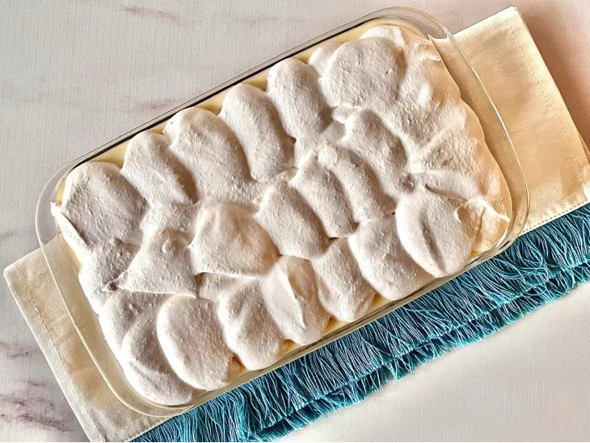

Ingredientes do creme
- 1 litro de leite
- 3 colheres de sopa de amido de milho
- 1 lata de leite condensado
- 2 gemas
Modo de Preparo
- Em uma panela, coloque o leite e o amido de milho. Misture bem até dissolver completamente;
- Adicione o leite condensado e as gemas. Misture bem e leve ao fogo médio;
- Transfira para um recipiente, cubra com um plástico (encostando no creme) e deixe esfriar.
- Em um refratário, faça uma camada de bolachas banhadas no leite;
- Cubra com uma camada de creme;
- Repita o processo até chegar quase no topo do refratário, finalizando com uma camada de creme. Reserve;
- Bata as claras em neve com açúcar. Reserve;
- Bata a nata com o açúcar até chegar no ponto de chantilly;
- Misture o chantilly com as claras em neve;
- Finalize o pavê com essa mistura, espalhando bem, cubra com plástico filme e leve para a geladeira até gelar bem (no mínimo 4 horas);